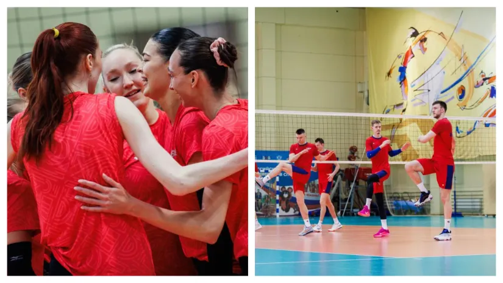

Rusi ruše međunarodni zid izolacije u Beogradu
Vikend je rezervisan za mečeve odbojkaških reprezentacija Srbije i Zbornaje komande
Suspenzija ruskih nacionalnih selekcija traje od 1. marta 2022. godine. Krovne odbojkaške federacije (CEV i FIVB) uvele su tada zabranu nastupa na međunarodnoj sceni. Ako se izuzmu jedine prijateljske utakmice protiv klubova iz te zemlje i Belorusije, Zbornaja komanda i nije imala priliku da se predstavi javnosti. Sve će se promeniti za vikend u Beogradu kada će muška i ženska reprezentacija odmeriti snage sa Srbijom.
Daleko veća pažnja je usmerena na meč dama (subota, 17.30 časova) u legendarnoj dvorani Pionir, uz besplatan ulaz. Razlog je jednostavan, jer su brojni stručnjaci ubeđeni da bi Rusija u ovom trenutku igrala značajnu ulogu na evropskom i svetskom nivou. Svojevremeno je i Zoran Terzić, sadašnji selektor Srbije, više puta pričao o potencijalu ekipe koju je trenirao od 2022. do 2024.
"Stasala je u Rusiji fenomenalna generacija i već sa 16 ili 17 godina je igrala u najjačim klubovima. Verujem da bi ta reprezentacija bila najkompletnija i najkompaktnija na planeti i da bi imala ono što nijedna druga nema. Zato je i žal zbog izostanka veći, ali na politiku ne može da se utiče", istakao je Terzić
Manifestacija u srpskoj prestonici nosi naziv Kup Kanala 1. Na terenu će biti i Orlovi, samo u nedelju od 20.00 časova. Selektor George Krecu će u duelu protiv Baćuška moći da se uveri u moćnosti izabranika sa kojima se nalazi na početku nove ere bez zvezda poput Aleksandara Atanasijevića, Uroša Kovačevića, Marka Podraščanina...